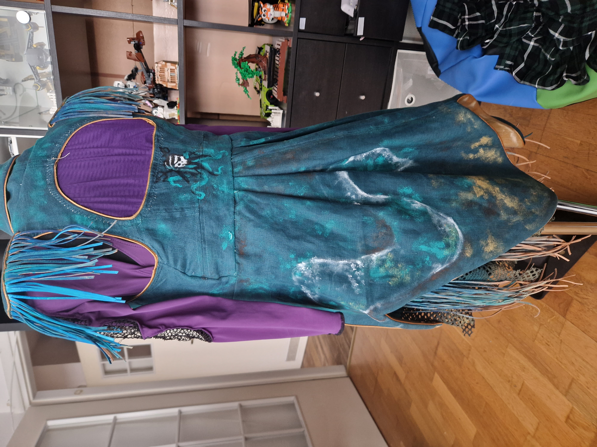
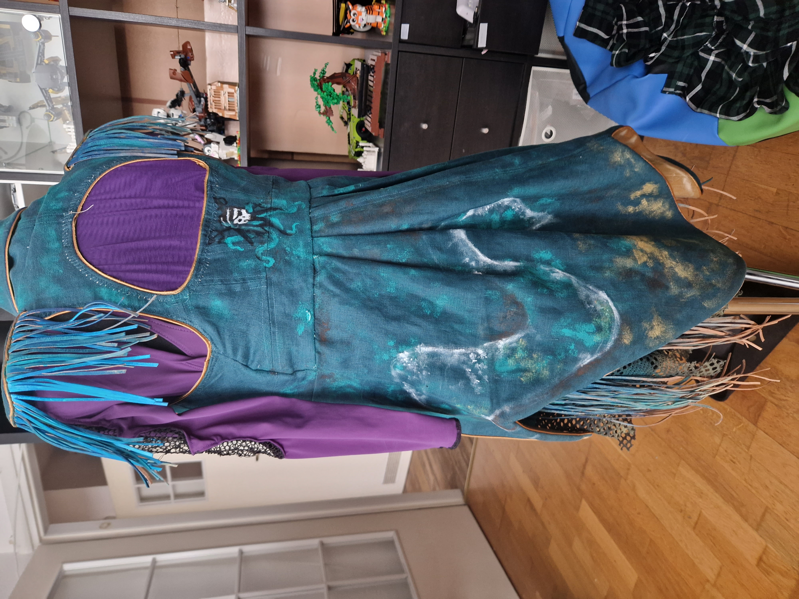

Ilierette Cosplay
Karolina Pietraś
Od dwóch lat zajmuję się cosplayem.
Druk 3D i jego obróbka jest jedną z moich specjalizacji. Pracuję
głównie na Original Prusa i3 MK3S+. Potrafię obrobić druk 3D
tak, aby był całkowicie gładki.
Maluję własne propsy i miałam kilka prób z areografem.
Próbowałam technik takich jak weathering (również na tkaninach),
dry brush i pracowałam z oil washem.
Sama tworzę kostiumy, które są kostiumami scenicznymi (nietypowe
kroje, otwarcia w nietypowych miejscach) przez co nauczyłam się
również tworzenia wykrojów, bo komercyjne mi nie wystarczały.
Używam do tego specjalnego programu - CLO3D, który pozwala
generować podglądy i wizualizacje.
Umiem modelować w Fusion 360 dość zaawansowane projekty, a
Blendera mam na liście do nauczenia się w najbliższym czasie.
Moją pasją powiązaną z cosplayem jest elektronika. Mam duże
doświadczenie w ledach i mini dymiarkach. Planuję nauczyć się
Pythona i silników, aby móc tworzyć ruchome propsy.
Jestem dostępna od zaraz, w pełnym wymiarze godzin.
Moje projekty
Weiss Schnee (RWBY)
Mój debitancki cosplay, na którym uczyłam się wszystkiego od
zera
Został on przygotowany z myślą o efekcie Quick Change - czyli
całkowitego zmiany kostiumu na drugi - miałam do uszycia dwa
kostiumy naraz
Ponadto zrobiłam ikoniczny rapier Weiss - Myrtenaster, ale z
małym twistem
Na jednym trailerze widziałam jak zapalają się runy na nim,
ale zrobienie tego efektu to było wyzwanie, bo wcześniej runy
są czarne
rozwiązanie przyszło szybko - folia do przyciemniania szyb
samochodowych
Dodatkowo chciałam aby był otwierany jak rewolver, co wymagało
przemyślenia co do układu LEDów
Wszystko wymodelowanie w Fusion 360, obrobione i pomalowane
areografem
Wspominałam może jeszcze o dymiarce?
Roll the dice
Kostium inspirowany sesjami RPG.
Wykorzystałam w nim umiejętności związane z tworzeniem
wykrojów, obsługi plotera tnącego i stylizacji peruk.
Dodatkowym atutem kostiumu jest świecąca ledowa kostka
Została ona wymodelowania w Fusion360, pomalowana ręcznie
farbami akrylowymi z techniką dry brush.
Ścianki boczne zostały odlane z żywicy epoksydowej, mold
został przygotowany z silikony na podstawie wydrukowanych w 3D
płytek
Dzięki temu widoczne jest światło LED
LEDY zostały zaprogramowane na płytce Adafruit z MicroPythonem

3D printed Elvira Dagger
Sztylet wymodelowany w Fusion 360
Wydrukowany na drukarce Original Prusa i3 MK3S+ i obrobiony aż
do gładkości.
Kryształki zostały osobno odlane z żywicy epoksydowej na
moldzie zrobionym z wydrukowanych kryształków.
Środek wmocniony stalowym prętem

Deadpool gun with fog machine
Wymodelowany w Fusion360 pistolet Deadpoola z mechanizmem,
który po naciśnięciu przycisku uwalnia dym
Malowany za pomocą areografu, efekt popękanej farby osiągnięty
za pomocą sprayu do włosów
Dymiarka została zrobiona z przerobionego e-papierosa
Odlewy silikonowych protetyków
Rzeźbione ręcznie za pomocą specjalnej plasteliny technicznej
Następnie została odlana forma w silikonie (Mold Star)
a niej za pomocą Dragon Skina z barwnikiem i Baldeez zostały
odlane protetyki, które są bezpieczne dla ciała

Hordak crystal
Wymodelowany w Fusion 360 i wydrukowany na drukarce żywicznej Anycubic Photon
Team Rocket Jessie
Cosplay Jessie z nostalgicznej serii Pokemon. Kostum został
zaprojektowany i wykrojony w Clo3D.
Szycie obejmowało obsługę owerlocka i tkaniny elastyczne

Uma
Mój najnowszy projekt, który jest jeszcze w trakcie
tworzenia.
Zmierzyłam się w nim między innymi z gorsertem na swing hooki,
weatheringu na tkaninach, szyciu skórzanych frędzli i
farbowaniu tkanin


 

EGM (bonus)
Eksperymenty z synchronizacją czujnika napięcia mięsni i serwomechanizmu, który chcę użyć w kolejnym projekcie (Entrapta z She-ry).